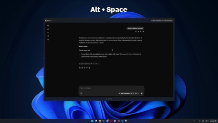

Llama Windows 0.13 · 产品 · 开源
Llama先估模型能否装进内存，再把电脑里的旧模型接进聊天
2026-10-20T08:13:07Z · 按原始版本日期补充，Product Hunt日期不当作首次发布。

项目README中的Windows聊天浮层演示；非本刊实测。 ↗ 原始图证把已经下载的模型接回来
同一台电脑上试过几种本地AI工具，常会留下分散在不同磁盘的模型文件。Llama Windows把聊天入口放在系统托盘，底下管理llama.cpp服务，常规模型使用Hugging Face缓存。十月二十日的0.13版进一步允许登记现有GGUF文件夹：程序递归查找模型，把元数据和加载入口放进同一列表，不复制一遍文件。文件位置仍由用户安排，界面负责让这些文件变得可选。十月二十五日Product Hunt再次提供发现入口，本次回看的是已标日期的版本变化，而非声称Windows版刚刚首次出现。
下载前看内存，加载后再看速度
模型详情原有上下文长度选择和逐档内存估算；新版将GGUF文件头中的估算与机器可用内存、显存和设备情况对照，显示三档适配判断，并在悬停解释原因。这样用户不用只凭参数规模猜测能否加载。另一个变化是自动识别模型附带的mtp、dflash或dspark草稿头，配置推测解码；已经加载但未启用的模型可重新加载接入。维护者声称兼容模型可加速，但没有给出足以代表所有电脑和任务的测量范围。适配标记回答资源是否可能够用，不回答长文推理是否准确，也不承诺交互等待时间。
从别的应用把内容送进来
平时按Alt加空格可打开当前模型的网页聊天浮层，隐藏窗口后再唤起会保留对话。新版接入Windows分享菜单，用户在其他应用选中文字或图像后，可以送进聊天输入区，再继续提问；图片进入多模态处理链，并不代表每个本地模型都能理解图像。llama协议链接也可打开聊天或加载模型，模型标识会先与服务实际拥有的列表核对。对编辑器、脚本和其他兼容客户端，已有本地OpenAI兼容接口提供另一条入口。用户需要在客户端设置服务器地址，同时选择符合任务能力的模型；托盘应用没有替用户完成这些业务判断。
本地推理仍有下载和维护
README说明提示词和推理留在本机，程序不发送遥测；模型下载与版本检查仍会发出网络请求，并携带应用、Windows版本和架构组成的用户代理信息。零云端推理不等于完全没有网络活动。新版还修复服务失去响应却继续显示运行的情况：模型列表请求失败后，再检查健康端点，给出停止响应提示。对长期开着的托盘工具，这让故障状态更接近实际服务状态。项目以MIT许可开放，Windows11安装包可从发行页取得；自动提交微软商店不等于认证已经通过。现有材料没有给出多客户端同时请求不同模型的完整调度表现。
← 回到项目，继续翻页